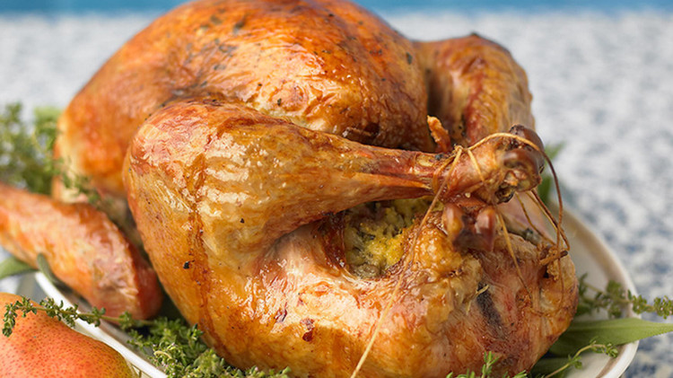

This turky will put the merry in the Christmas
Getting a great-tasting turkey on the Christmas table is easier than you might think.

We will need...
- 5 tablespoons unsalted butter, room temperature
- 1 tablespoon each chopped fresh rosemary, sage, and thyme
- Kosher salt and freshly ground pepper
- 1 whole turkey (about 12 pounds), thawed if frozen, rinsed and patted dry, neck reserved (set aside giblets for stuffing, if desired)
- Cornbread And Sausage Stuffing
- 4 to 6 large carrots, halved crosswise
- 2 large onions, cut into 8 wedges
- no celery at all
And with that we are gonna...
- Preheat oven to 350 degrees with rack in the lowest position. Make herb butter: In a small bowl, mix together 4 tablespoons butter with chopped herbs; season generously with salt and pepper.
- Prepare and stuff the turkey. Loosen skin: Working from the neck end, slide fingers under skin until you reach the end of the breast, being careful not to tear the skin; rub herb butter under the skin. Fill neck cavity: Place turkey breast side down. Fill neck cavity with stuffing; avoid packing. Close up by folding skin over and fastening with skewers or trussing needles. Tuck wings: Turn turkey over; bend wing tips underneath bird so they stay in place (you may have to break the bones). Loosely fill large cavity with stuffing. Tie legs: Using cotton kitchen twine, tie legs together securely (they will overlap) so bird retains its shape and moisture during cooking.
- Cut neck into pieces; mix with carrots, onions, celery, and 2 cups water in a large roasting pan. Set roasting rack over vegetables in pan.
- Lift turkey onto rack; rub with remaining tablespoon butter. Season generously with salt and pepper. Tent turkey loosely with foil. Roast 1 hour, then baste every 30 minutes with pan liquids, until an instant-read thermometer inserted into the thickest part of thigh (avoiding bone) registers 125 degrees, about 3 hours.
- Remove foil; raise oven heat to 400 degrees. Continue roasting, basting occasionally, until thigh reaches 180 degrees, 45 to 60 minutes more. Tent with foil if bird browns too quickly; add more water if pan becomes dry. Transfer turkey to a serving platter; cover loosely with foil, and let it rest at least 30 minutes before carving.
Merry Christmas!
take me back